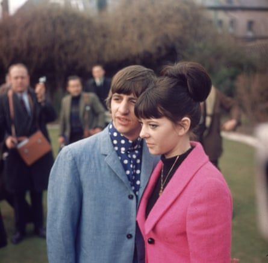

Former Beatles drummer Ringo Starr said that he personally intervened in the script of the forthcoming four-film Beatles biopic directed by Sam Mendes to clarify the depiction of himself and his then wife Maureen.
In an interview with the New York Times , Starr said that he had met Mendes in London in April and spent two days discussing the script for the section of the project focusing on him.
Having gone through the script in detail, Starr said that Mendes “had a writer [involved] – very good writer, great reputation, and he wrote it great, but it had nothing to do with Maureen and I,” Starr said. “That’s not how we were. I’d say, ‘We would never do that.’”
Ringo and Maureen on honeymoon in Hove in 1965.Photograph: John Waterman/Getty Images
Starr met Maureen Cox in 1962 when the Beatles were performing at the Cavern club in Liverpool and they were married in 1965; they divorced in 1975 and she subsequently married Isaac Tigrett, co-founder of the Hard Rock Cafe. She died in 1994 from leukaemia. Her and Starr’s son Zak Starkey also became a drummer, with Starr recently defending him after he was fired by the Who.
According to New York Times writer Lindsay Zoladz, Starr is now “much more satisfied with how he’s depicted in the script” and that he sends director Mendes “peace and love”.
Starr will be played in the films by Irish actor Barry Keoghan, star of The Banshees of Inisherin and Saltburn, whose casting was accidentally revealed by Starr in November in an interview with Entertainment Tonight. Keoghan’s role in the project was officially announced in April , alongside castmates Joseph Quinn (George Harrison), Harris Dickinson (John Lennon) and Paul Mescal (Paul McCartney).
Keoghan recently talked about meeting Starr to prepare for the role, saying he was too nervous to look at him. In an appearance on Jimmy Kimmel Live , Keoghan said he was “in awe” and “just froze”. “When I was talking to him, I couldn’t look at him. I was nervous … he was like, ‘You can look at me’.”
He added: “My job is to observe and take in kind of mannerisms and study, but I want to humanise him and bring feelings to him, not just sort of imitate him.”
Mendes is acting as producer on all four films along with regular collaborators Pippa Harris and Julie Pastor. In May reports emerged that he had hired award-winning writers Jez Butterworth, Peter Straughan and Jack Thorne to work on the films.
Mendes’ Beatles films are scheduled to be released in 2028.